Basics of native windows in AIR
For quick explanations and code examples of working with native windows in AIR, see the following quick start articles on the Adobe Developer Connection:
Interacting with a window (Flex)
Launching windows (Flex)
Creating toast-style windows (Flex)
Interacting with a window (Flash)
Creating toast-style windows (Flash)
AIR provides an easy-to-use, cross-platform window API for creating native operating system windows using Flash®, Flex™, and HTML programming techniques.
With AIR, you have a wide latitude in developing the appearance of your application. The windows you create can look like a standard desktop application, matching Apple style when run on the Mac, conforming to Microsoft conventions when run on Windows, and harmonizing with the window manager on Linux—all without including a line of platform-specific code. Or you can use the skinnable, extensible chrome provided by the Flex framework to establish your own style no matter where your application is run. You can even draw your own window chrome with vector and bitmap artwork with full support for transparency and alpha blending against the desktop. Tired of rectangular windows? Draw a round one.
Windows in AIR
AIR supports three distinct APIs for working with windows:
The ActionScript-oriented NativeWindow class provides the lowest level window API. Use NativeWindows in ActionScript and Flash Professional-authored applications. Consider extending the NativeWindow class to specialize the windows used in your application.
In the HTML environment, you can use the JavaScript Window class, just as you would in a browser-based web application. Calls to JavaScript Window methods are forwarded to the underlying native window object.
The Flex framework mx:WindowedApplication and mx:Window classes provide a Flex "wrapper" for the NativeWindow class. The WindowedApplication component replaces the Application component when you create an AIR application with Flex and must always be used as the initial window in your Flex application.
ActionScript windows
When you create windows with the NativeWindow class, use the Flash Player stage and display list directly. To add a visual object to a NativeWindow, add the object to the display list of the window stage or to another display object container on the stage.
HTML windows
When you create HTML windows, you use HTML, CSS, and JavaScript to display
content. To add a visual object to an HTML window, you add that content to the
HTML DOM. HTML windows are a special category of NativeWindow. The AIR host
defines a nativeWindow property in HTML windows that provides access to the
underlying NativeWindow instance. You can use this property to access the
NativeWindow properties, methods, and events described here.
Note: The JavaScript Window object also has methods for scripting the containing
window, such as moveTo() and close(). Where overlapping methods are
available, you can use whichever method that is convenient.
Flex Framework windows
When you create windows with the Flex framework, you typically use MXML
components to populate the window. To add a Flex component to a window, you add
the component element to the window MXML definition. You can also use
ActionScript to add content dynamically. The mx:WindowedApplication and
mx:Window components are designed as Flex containers and so can accept Flex
components directly, whereas NativeWindow objects cannot. When necessary, the
NativeWindow properties and methods can be accessed through the
WindowedApplication and Window objects using the nativeWindow property.
The initial application window
The first window of your application is automatically created for you by AIR.
AIR sets the properties and content of the window using the parameters specified
in the initialWindow element of the application descriptor file.
If the root content is a SWF file, AIR creates a NativeWindow instance, loads the SWF file, and adds it to the window stage. If the root content is an HTML file, AIR creates an HTML window and loads the HTML.
Native window classes
The native window API contains the following classes:
Package | Classes |
|---|---|
flash.display | |
flash.events |
Native window event flow
Native windows dispatch events to notify interested components that an important change is about to occur or has already occurred. Many window-related events are dispatched in pairs. The first event warns that a change is about to happen. The second event announces that the change has been made. You can cancel a warning event, but not a notification event. The following sequence illustrates the flow of events that occurs when a user clicks the maximize button of a window:
The NativeWindow object dispatches a
displayStateChangingevent.If no registered listeners cancel the event, the window maximizes.
The NativeWindow object dispatches a
displayStateChangeevent.In addition, the NativeWindow object also dispatches events for related changes to the window size and position. The window does not dispatch warning events for these related changes. The related events are:
A
moveevent is dispatched if the top, left corner of the window moved because of the maximize operation.A
resizeevent is dispatched if the window size changed because of the maximize operation.
A NativeWindow object dispatches a similar sequence of events when minimizing, restoring, closing, moving, and resizing a window.
The warning events are only dispatched when a change is initiated through window chrome or other operating-system controlled mechanism. When you call a window method to change the window size, position, or display state, the window only dispatches an event to announce the change. You can dispatch a warning event, if desired, using the window
dispatchEvent()method, then check to see if your warning event has been canceled before proceeding with the change.For detailed information about the window API classes, methods, properties, and events, see the NativeWindow class listing in the ActionScript 3.0 Reference for the Adobe Flash Platform.
Properties controlling native window style and behavior
The following properties control the basic appearance and behavior of a window:
typesystemChrometransparentowner
When you create a window, you set these properties on the
NativeWindowInitOptions object passed to the window constructor. AIR reads the
properties for the initial application window from the application descriptor.
(Except the type property, which cannot be set in the application descriptor
and is always set to normal.) The properties cannot be changed after window
creation.
Some settings of these properties are mutually incompatible: systemChrome
cannot be set to standard when either transparent is true or type is
lightweight.
Window types
The AIR window types combine chrome and visibility attributes of the native operating system to create three functional types of window. Use the constants defined in the NativeWindowType class to reference the type names in code. AIR provides the following window types:
| Type | Description |
|---|---|
| Normal | A typical window. Normal windows use the full-size style of chrome and appear on the Windows taskbar and the Mac OS X window menu. |
| Utility | A tool palette. Utility windows use a slimmer version of the system chrome and do not appear on the Windows taskbar and the Mac OS X window menu. |
| Lightweight | Lightweight windows have no chrome and do not appear on the Windows taskbar or the Mac OS X window menu. In addition, lightweight windows do not have the System (Alt+Space) menu on Windows. Lightweight windows are suitable for notification bubbles and controls such as combo-boxes that open a short-lived display area. When the lightweight type is used, systemChrome must be set to none. |
Window chrome
Window chrome is the set of controls that allow users to manipulate a window in the desktop environment. Chrome elements include the title bar, title bar buttons, border, and resize grippers.
System chrome
You can set the systemChrome property to standard or none. Choose
standard system chrome to give your window the set of standard controls
created and styled by the user's operating system. Choose none to provide your
own chrome for the window. Use the constants defined in the
NativeWindowSystemChrome class to reference the system chrome settings in code.
System chrome is managed by the system. Your application has no direct access to
the controls themselves, but can react to the events dispatched when the
controls are used. When you use standard chrome for a window, the transparent
property must be set to false and the type property must be normal or
utility.
Flex chrome
When you use the Flex WindowedApplication or Window components, the window can
be use either system chrome or chrome provided by the Flex framework. To use the
Flex chrome, set the systemChrome property used to create the window to
none. When using the Flex 4 spark components rather than the mx components,
you must specify the skin class in order to use Flex chrome. You can use the
built-in skins or provide your own. The following example demonstrates how to
use the built-in spark WindowedApplication skin class to provide the window
chrome:
<?xml version="1.0" encoding="utf-8"?>
<s:WindowedApplication xmlns:fx="http://ns.adobe.com/mxml/2009"
xmlns:s="library://ns.adobe.com/flex/spark"
xmlns:mx="library://ns.adobe.com/flex/mx">
<fx:Style>
@namespace "library://ns.adobe.com/flex/spark";
WindowedApplication
{
skinClass:ClassReference("spark.skins.spark.SparkChromeWindowedApplicationSkin");
}
</fx:Style>
</s:WindowedApplication>
For more information, see Using Flex 4: About the AIR window containers: Controlling window chrome
Custom chrome
When you create a window with no system chrome, then you must add your own chrome controls to handle the interactions between a user and the window. You are also free to make transparent, non-rectangular windows.
To use custom chrome with the mx:WindowedApplication or mx:Window components,
you must set the showFlexChrome style to false. Otherwise, Flex will add its
own chrome to your windows.
Window transparency
To allow alpha blending of a window with the desktop or other windows, set the
window transparent property to true. The transparent property must be set
before the window is created and cannot be changed.
A transparent window has no default background. Any window area not containing an object drawn by the application is invisible. If a displayed object has an alpha setting of less than one, then anything below the object shows through, including other display objects in the same window, other windows, and the desktop.
Transparent windows are useful when you want to create applications with borders that are irregular in shape or that "fade out" or appear to be invisible. However, rendering large alpha-blended areas can be slow, so the effect should be used conservatively.
Important: On Linux, mouse events do not pass through fully transparent pixels. You should avoid creating windows with large, fully transparent areas since you may invisibly block the user's access to other windows or items on their desktop. On Mac OS X and Windows, mouse events do pass through fully transparent pixels.
Transparency cannot be used with windows that have system chrome. In addition, SWF and PDF content in HTML may not display in transparent windows. For more information, see Considerations when loading SWF or PDF content in an HTML page.
The static NativeWindow.supportsTransparency property reports whether window
transparency is available. When transparency is not supported, the application
is composited against a black background. In these cases, any transparent areas
of the application display as an opaque black. It is a good practice to provide
a fallback in case this property tests false. For example, you could display a
warning dialog to the user, or display a rectangular, non-transparent user
interface.
Note that transparency is always supported by the Mac and Windows operating systems. Support on Linux operating systems requires a compositing window manager, but even when a compositing window manager is active, transparency can be unavailable because of user display options or hardware configuration.
Transparency in an MXML application window
By default, the background of an MXML window is opaque, even if you create the window as transparent. (Notice the transparency effect at the corners of the window.) To present a transparent background for the window, set a background color and alpha value in the style sheet or \<mx:Style> element contained in your application MXML file. For example, the following style declaration gives the background a slightly transparent green shade:
WindowedApplication
{
background-alpha:".8";
background-color:"0x448234";
}
Transparency in an HTML application window
By default the background of HTML content displayed in HTML windows and
HTMLLoader objects is opaque, event if the containing window is transparent. To
turn off the default background displayed for HTML content, set the
paintsDefaultBackground property to false. The following example creates an
HTMLLoader and turns off the default background:
var htmlView:HTMLLoader = new HTMLLoader();
htmlView.paintsDefaultBackground = false;
This example uses JavaScript to turn off the default background of an HTML window:
window.htmlLoader.paintsDefaultBackground = false;
If an element in the HTML document sets a background color, the background of that element is not transparent. Setting a partial transparency (or opacity) value is not supported. However, you can use a transparent PNG-format graphic as the background for a page or a page element to achieve a similar visual effect.
Window ownership
One window can own one or more other windows. These owned windows always appear in front of the master window, are minimized and restored along with the master window, and are closed when the master window is closed. Window ownership cannot be transfered to another window or removed. A window can only be owned by one master window, but can own any number of other windows.
You can use window ownership to make it easier to manage windows used for tool palettes and dialogs. For example, if you displayed a Save dialog in association with a document window, making the document window own the dialog will keep the dialog in front of the document window automatically.
A visual window catalog
The following table illustrates the visual effects of different combinations of window property settings on the Mac OS X, Windows, and Linux operating systems:
Window settings | Mac OS X | Microsoft Windows | Linux * |
|---|---|---|---|
Type: normal SystemChrome: standard Transparent: false | 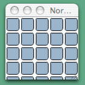 | 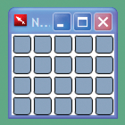 | 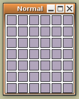 |
Type: utility SystemChrome: standard Transparent: false |  | 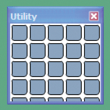 | 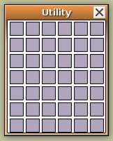 |
Type: Any SystemChrome: none Transparent: false | 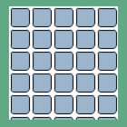 | 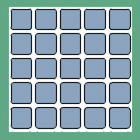 | 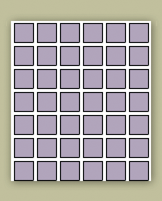 |
Type: Any SystemChrome: none Transparent: true | 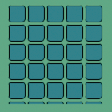 | 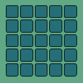 | 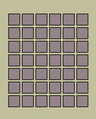 |
mx:WindowedApplication or mx:Window Type: Any SystemChrome: none Transparent: true | 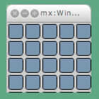 | 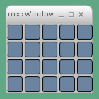 | 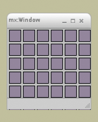 |
Note: The following system chrome elements are not supported by AIR: the Mac OS X Toolbar, the Mac OS X Proxy Icon, Windows title bar icons, and alternate system chrome.
More Help topics